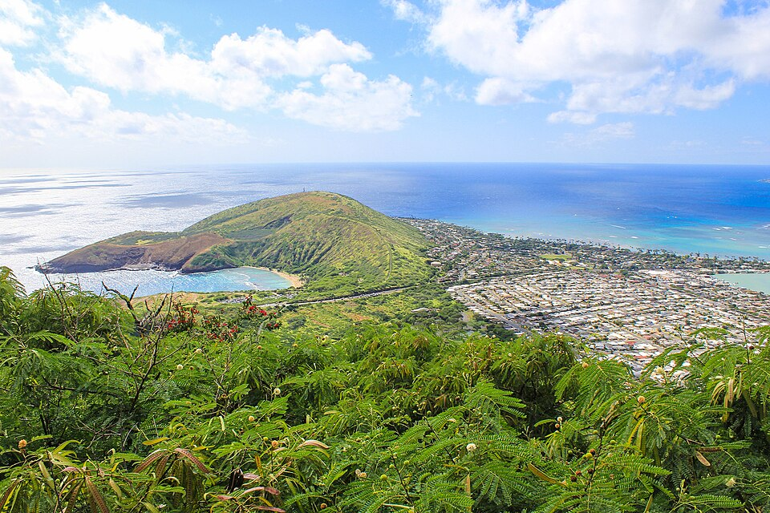

Koko Head
Place: Koko Head, East Honolulu, Oʻahu
Type: Volcanic headland / coastal landmark / historic landscape
Story it tells: A red volcanic headland that helps define Maunalua, Hanauma Bay, and the southeastern edge of Oʻahu.

Koko Head is the prominent volcanic headland at the eastern end of Maunalua Bay on Oʻahu. The name koko can mean “blood” or “red earth,” likely referring to the reddish volcanic soil and rock of the headland. Along with nearby Koko Crater, it helps define the older Maunalua landscape, whose name is commonly interpreted as “two mountains.”
Geologically, Koko Head is part of the Honolulu Volcanics, a group of younger volcanic features formed after the main Koʻolau shield volcano. The headland includes rugged slopes, coastal cliffs, eroded tuff deposits, and volcanic depressions that helped shape the southeastern corner of Oʻahu. Nearby landmarks such as Hanauma Bay, Hālona, and Koko Crater are all part of this connected landscape. Erosion eventually breached one of Koko Head's craters, creating the protected Hanauma Bay and reef system.
Koko Head and Koko Crater are often confused. Koko Head is the lower coastal headland near Hanauma Bay and the ocean cliffs, while Koko Crater is the taller inland cone famous for the steep railway trail. Some public facilities use the Koko Head name even when they sit on or near Koko Crater, which adds to the confusion. Together, the two landmarks frame Maunalua and define how many see Hawaiʻi Kai and the surrounding area.
Older traditions also associate the area with the name Kawaihoa, sometimes translated as "companion's water." The coastal waters below Koko Head were connected to marine resource management, including fishing grounds, koʻa fishing shrines, seaweed gathering, and nearby salt-producing areas of the region. Resources from places such as Kuapā Fishpond and the surrounding coastline supported communities that relied on stewardship of both land and sea.
The area surrounding Koko Head carries older cultural importance. Archaeological sites, fishing grounds, trails, and coastal gathering areas reflect long use of this shoreline by Native Hawaiians. The cliffs, coves, and reef edges made the area important for fishing and ocean access, while the nearby lands connected Maunalua, Hanauma, and the broader southeastern coast.
In the twentieth century, Koko Head became part of a changing public landscape. Portions of the area were incorporated into parks, while nearby lowlands were transformed through the development of Hawaiʻi Kai. Today, Koko Head is known for its coastal views, service-road summit trail, radio and communication facilities, and its relationship to Hanauma Bay and the volcanic shoreline below.
Koko Head’s name preserves a visual description of the land itself. Whether seen from Maunalua Bay, Hanauma Bay, or the highway along the coast, the headland remains one of East Oʻahu’s defining features: a red volcanic landmark standing between the sheltered bay and the open Pacific.